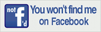

"Facebook, in it self, is not secure. Just like Windows 10 it collects more personal data than one could even imagine. In fact, barely anyone cares, because they think it is important to their lifes and socialness. I disagree. It's basically only useful for logging in to websites quicker. Even then, you should use a strong password, and have the basic balance of freedom that I put on my homepage. That's why I am making my Facebook 'read-only.' Just going to try to minimize my social life to 'real-life friends' and social networks that dont collect as much as Facebook. Goodbye facebook." --Sparksammy
EMail: sparksammy@sllord.info
Snapchat:
Twitter: samlordofficial (this is my dark side's account, but I am as nice as possible to friends!)
Note that I will not accept friend requests from strangers! (Nothing personal, just want to be secure!)
